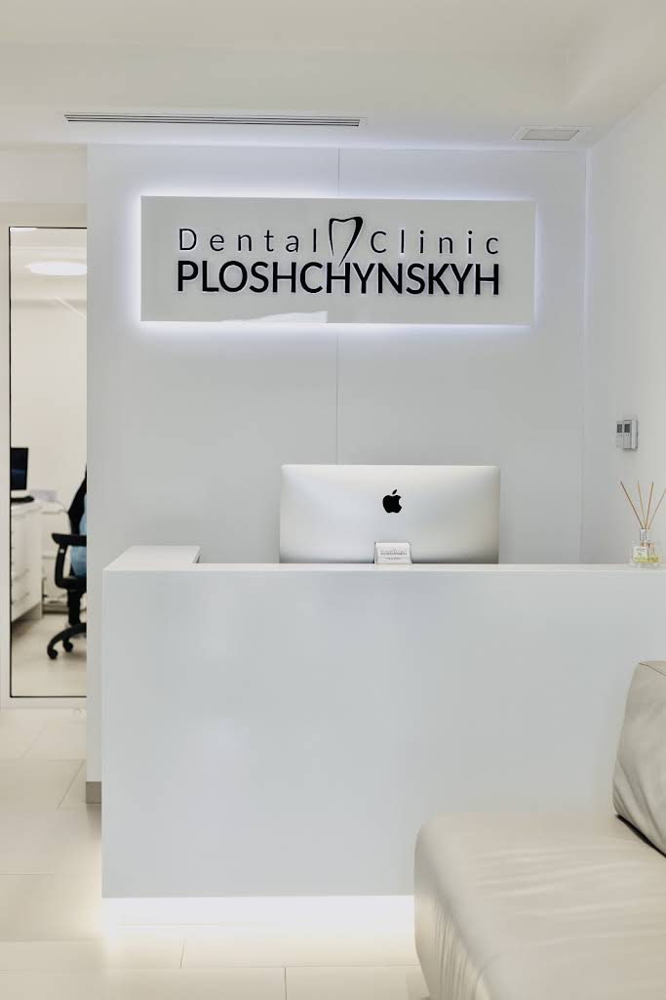

Наш простір
Ресепшн, кабінети та атмосфера клініки
Ресепшн клініки — місце першого знайомства
1 / 3
Наш простір і підхід
Побачте клініку, познайомтеся з командою та дізнайтеся, як тут організовують стоматологічну допомогу.

Клініка Площинських розташована на Сихові, на вулиці Зубрівській, 27. Тут працюють із профілактикою, лікуванням власних зубів та комплексним відновленням усмішки.
Серед напрямів — терапія й ендодонтія, імплантація, протезування, ортодонтія та дитяча стоматологія. Після діагностики команда обговорює з пацієнтом план лікування й кошторис.
*За інформацією на офіційній сторінці клініки.
Зазирніть усередину
Гортайте фотографії, роздивляйтеся деталі та відкривайте знімки на весь екран.
Ресепшн, кабінети та атмосфера клініки
Ресепшн клініки — місце першого знайомства
Обладнання та робота команди
Мікроскоп: увага до дрібних деталей
Засновники клініки
Головний лікар · ортопед, хірург
Співзасновниця клініки. У публікаціях команди розповідає про лікування під седацією та підхід до складних клінічних ситуацій.
Співзасновник · керівник клініки
Знайомство з лікарями
Різні спеціалізації. Спільна увага до вашого лікування. Познайомтеся з лікарями ще до першого візиту.
Хірург-імплантолог
Імплантація та хірургічна стоматологія. У відео клініки пояснює етапи комплексного відновлення зубів.
Стоматолог-ортопед
Ортопедична стоматологія: відновлення форми та функції усмішки.
Гігієніст, пародонтолог
Професійна гігієна та пародонтологія. Допомога у догляді за зубами та яснами.
Терапевт, реставратор
Терапевтична стоматологія та реставрації. Пацієнти також відзначають її роботу з дітьми.
Терапевт, ендодонтист
Терапевтичне й ендодонтичне лікування. У матеріалах клініки представлені її естетичні реставрації.
Для пацієнтів з-за кордону
Клініка пропонує попередню онлайн-консультацію, оцінку ситуації та планування лікування для тих, хто живе за кордоном.
Обговоріть із командою необхідні матеріали, орієнтовний кошторис і графік візитів. Тривалість та обсяг лікування залежать від клінічної ситуації.
Обговорити свій приїздПочнімо зі знайомства
Поставте запитання, розкажіть про свій запит
і домовтеся про консультацію.